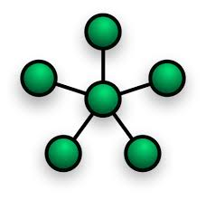
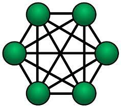
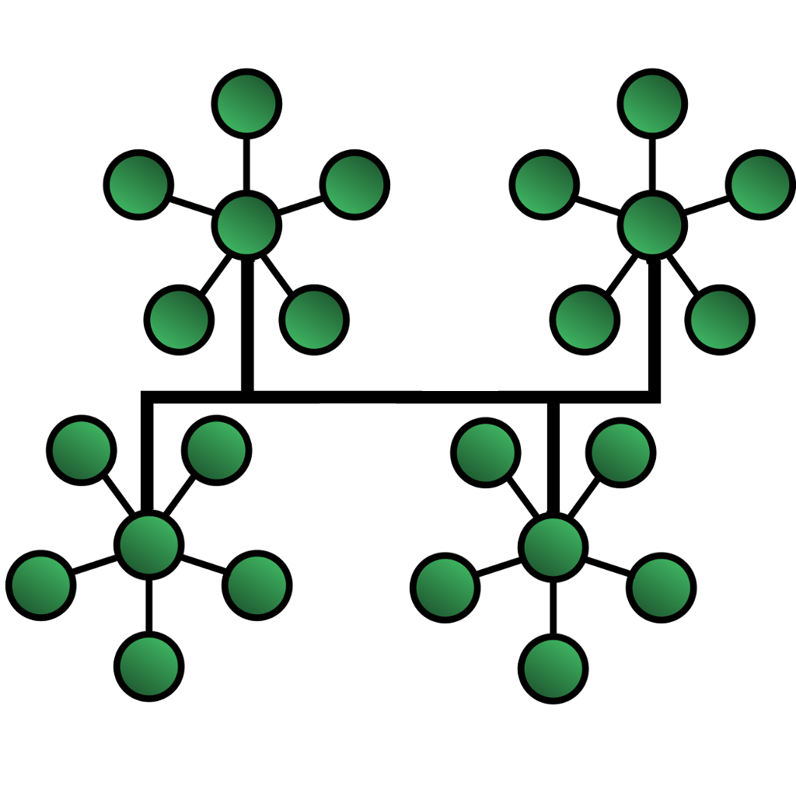

In bus topology, there is a long cable, called backbone cable (or simply backbone), tha connects various nodes through a connector called tap In this, a message sent by one is received by all devices connected to backbone cable. This topology requires less cabling and is easy to install and extend the network laid u however, fault detection and isolation is difficult.
 In ring topology, all the devices are attached through a cable in the form of ring. The message to be
communicated is transmitted in one direction,
thereby, relaying the message to the intended recipient. addition and deletion of
devices, and fault detection and isolation is easy. However, the topology suffers from
the limitation of single point failure leading to disruption of the entire network. sending a
message from one node to another node may take more time.
In ring topology, all the devices are attached through a cable in the form of ring. The message to be
communicated is transmitted in one direction,
thereby, relaying the message to the intended recipient. addition and deletion of
devices, and fault detection and isolation is easy. However, the topology suffers from
the limitation of single point failure leading to disruption of the entire network. sending a
message from one node to another node may take more time.
 In star topology, all the devices are connected to the central controller called hub communication between any two devices takes place through the hub responsible for relaying messages. configured. Also, fault detection and isolation is easy. However, it requires more cabling as compared to bus and ring topology. Also, hub failure will lead to network failure
 In mesh topology, every node is connected with every other node in the network Because of dedicated point to point connection between every possible pair of nodes, the topology provides secure data t problem. it requires a large number of connections to establish the topology. This leads to difficulty in installation as the number of nodes grow as the network grows.
 tree topology is a hybrid topology using a combination of star and bus topology. Backbone cable in a bus topology acts like the stem of the tree, and star networks (and even individual nodes) are connected to the main tree as shown in Figure 1.14 damage to a segment of a network laid using tree topology will not affect other segments.installation and configuration is difficult as compared to other topologies. also, if the backbone cab communication is disrupted